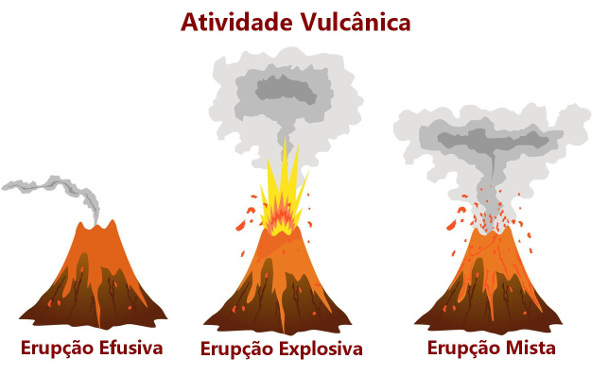

O vulcanismo é um fenômeno geológico natural determinado pelas atividades vulcânicas. O processo de vulcanismo ocorre por meio da alta pressão e temperatura presente no interior da Terra, onde há expulsão do magma (lava), cinzas, gases, poeira, vapor d’água e de outros materiais (piroclastos) para a superfície. Entende-se por vulcão uma abertura na superfície da crosta terrestre, um respiradouro, por meio do qual se dá a expulsão ou erupção do magma, dos gases e das cinzas associadas.


Magma, ou material magmático é a substância natural constituída por diferentes proporções de líquidos, cristais e gases, cuja natureza depende de suas propriedades químicas, físicas e do ambiente geológico envolvido. O magma se apresenta em duas formas básicas, o primário e o parental. É classificado como magma primário o líquido inicial obtido imediatamente à fusão da fonte; magma parental é o líquido primário já modificado por mecanismos de diferenciação.
Há três tipos de atividade vulcânica, variando de acordo com o tipo de magma, sua temperatura ou composição química:
- Explosiva: atividade associada à lava viscosa, originária do magma ácido, rico em sílica e gases. Por ser viscosa, tal lava se solidifica na cratera, assumindo duas formas possíveis, uma conhecida pelo nome de agulha, que é a acumulação de formas alongadas e pontiagudas no interior da chaminé, ou ainda o formato de domo ou cúpula, que consiste na acumulação de lava consolidada na cratera em forma arredondada.
- Efusiva: fenômeno vulcânico que envolve lava muito fluida, derivada do magma primário. De emissão rápida, o fenômeno ocorre em grandes escoadas, pronto a percorrer rapidamente as distâncias.
- Mista: é a atividade vulcânica que ocorre tanto de modo explosivo como efusivo, ou seja, alterna períodos calmos e outros de violentas explosões, com libertação de gases e material piroclástico. 